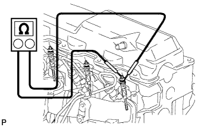

СВЕЧА НАКАЛИВАНИЯ > ПРОВЕРКА БЕЗ СНЯТИЯ С АВТОМОБИЛЯ |
| 1. INSPECT GLOW PLUG |
|  |
Measure the resistance according to the value(s) in the table below.
| Tester Connection | Condition | Specified Condition |
| Glow plug terminal - Body ground | 20°C (68°F) | Approximately 1.0 Ω |